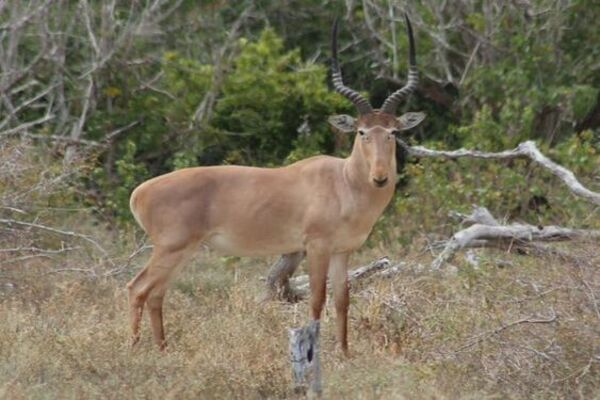

Hirola (Beatragus hunteri)
O hirola é um antílope encontrado no Quênia e na Somália. Seu risco de extinção já está no nível
de perigo crítico, e as principais causas dessa extinção são o desmatamento de seu habitat e a
caça dessa espécie.
Seu habitat é semiárido, com pastagens arbustivas dispersas e pastagens arborizadas com Acácias.
São animais herbívoros e se alimentam praticamente de ervas verdes.
Sua gestação dura em torno de 252 dias, quando adultos chegam a pesar mais de 70 quilos e
normalmente têm 1,6m de comprimento.